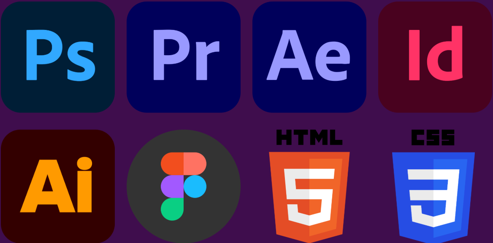

Hey, you!
Yeah, you!

Welcome onboard!
My name is Rune, and I am a 22-year-old multimedia designer from Denmark!
For years, I had enjoyed photoshopping and video editing as an off-time hobby, but never more than that. It was only while studying to be an IT Technician that I realized, a little late, that I'd much rather work with what I had enjoyed doing for so long.
Personally, I've grown to miss a time where the internet had more personality. People had personal websites, social media profiles allowed for more freeform customization and even some larger brands were “quirkier”, so to speak. My hope is to do my part to hearken back to that era, for any like-minded individuals.
While I feel the most confident when it comes to video- and photo editing, I've also dabbled in both filming and photography too, alongside some coding, mostly in HTML and CSS. The programs I’d say I’m most experienced in are Adobe’s Photoshop, Premiere Pro, After Effects, InDesign, Illustrator. Outside of Adobe products, I’m also well versed in Figma.
For example, this very website was coded purely with HTML and CSS by me! I know right?! If you're curious to see more of what I've done, head over to my “Projects” page.
If any of this interests you, give me a holler with the contact page!
